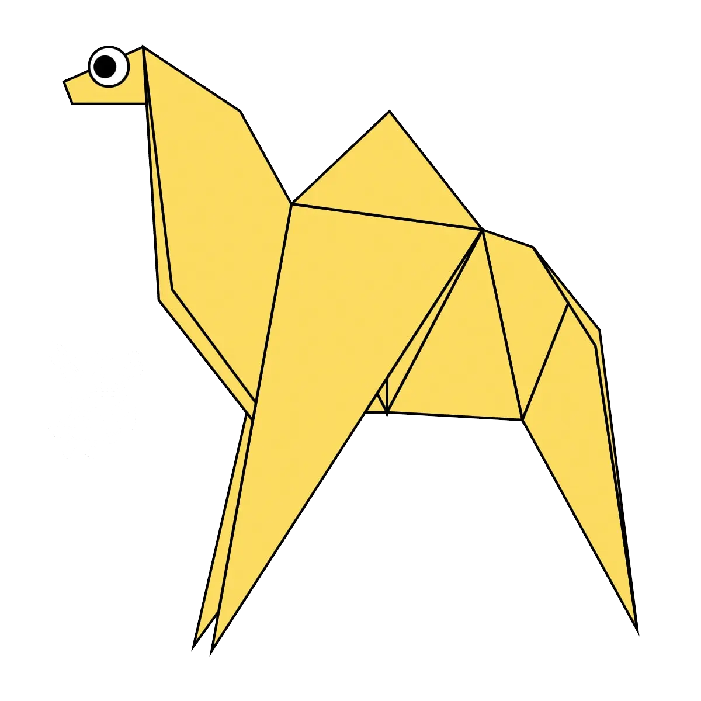
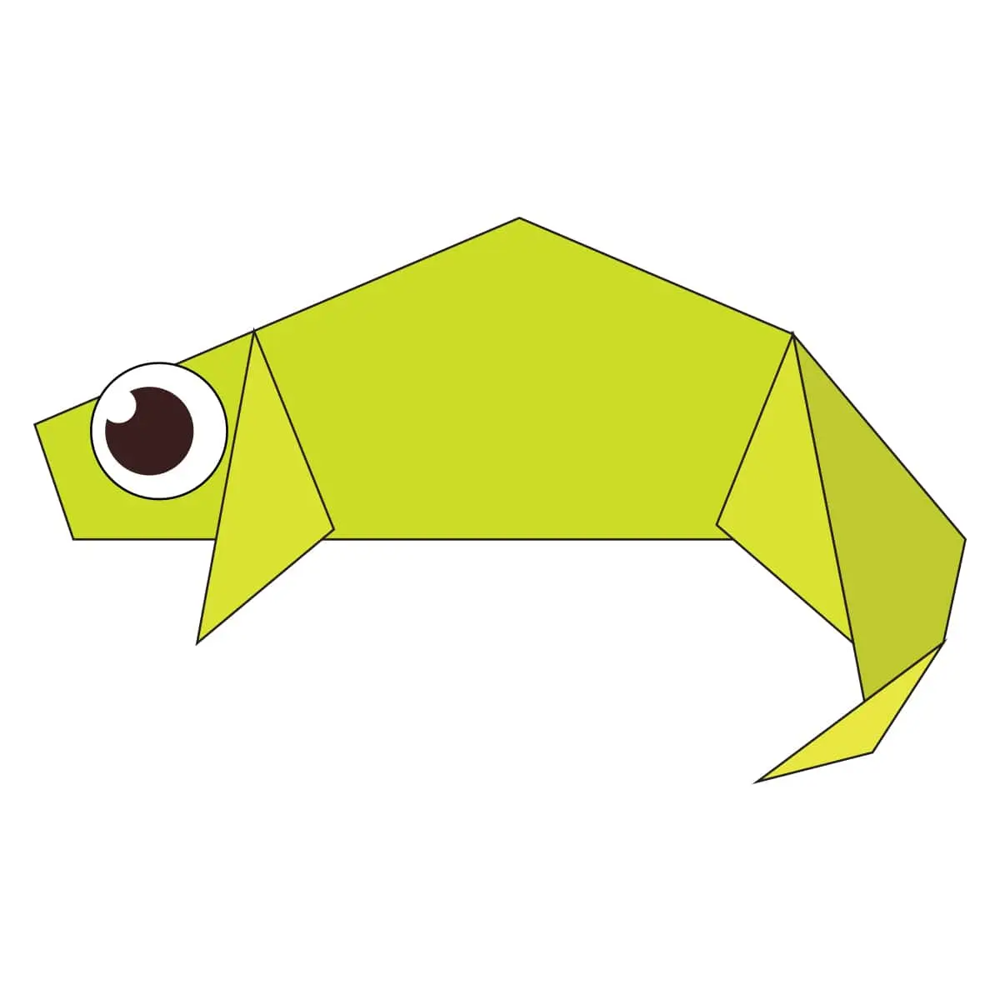
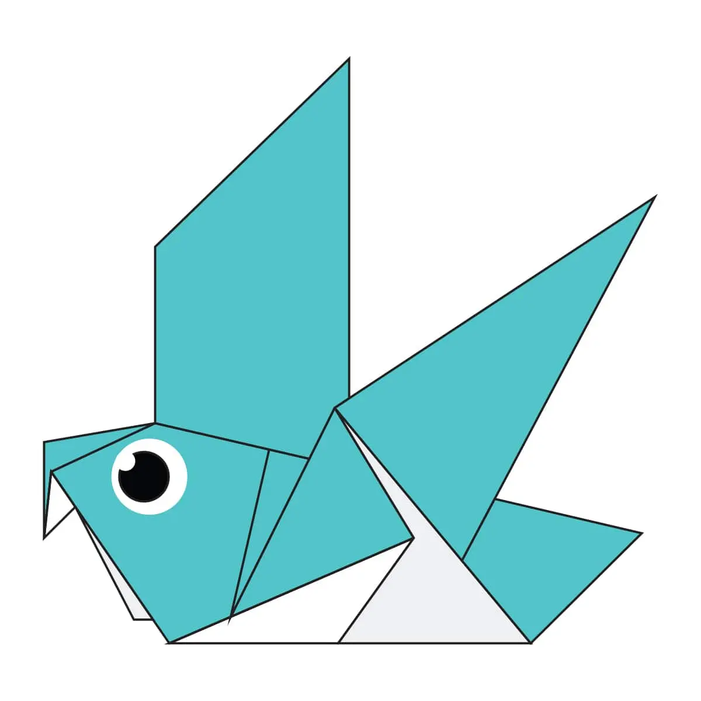
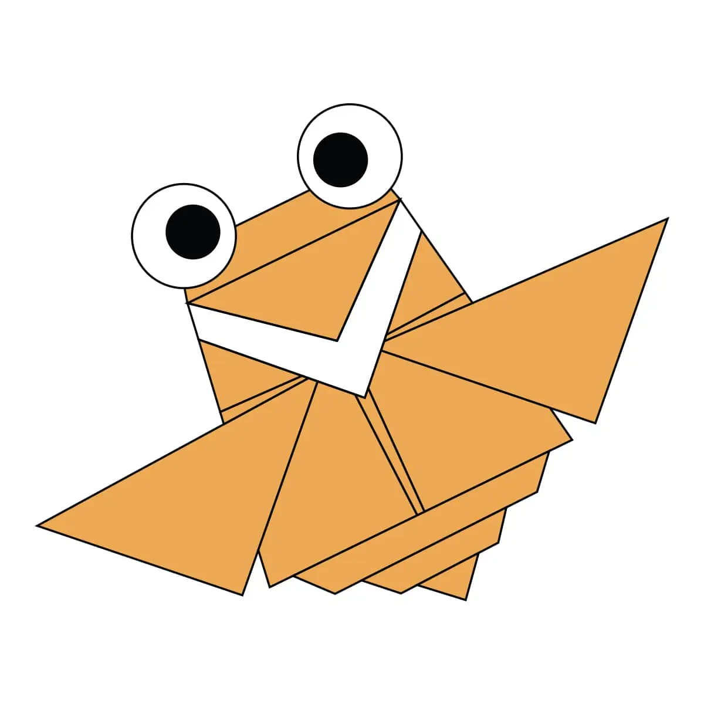
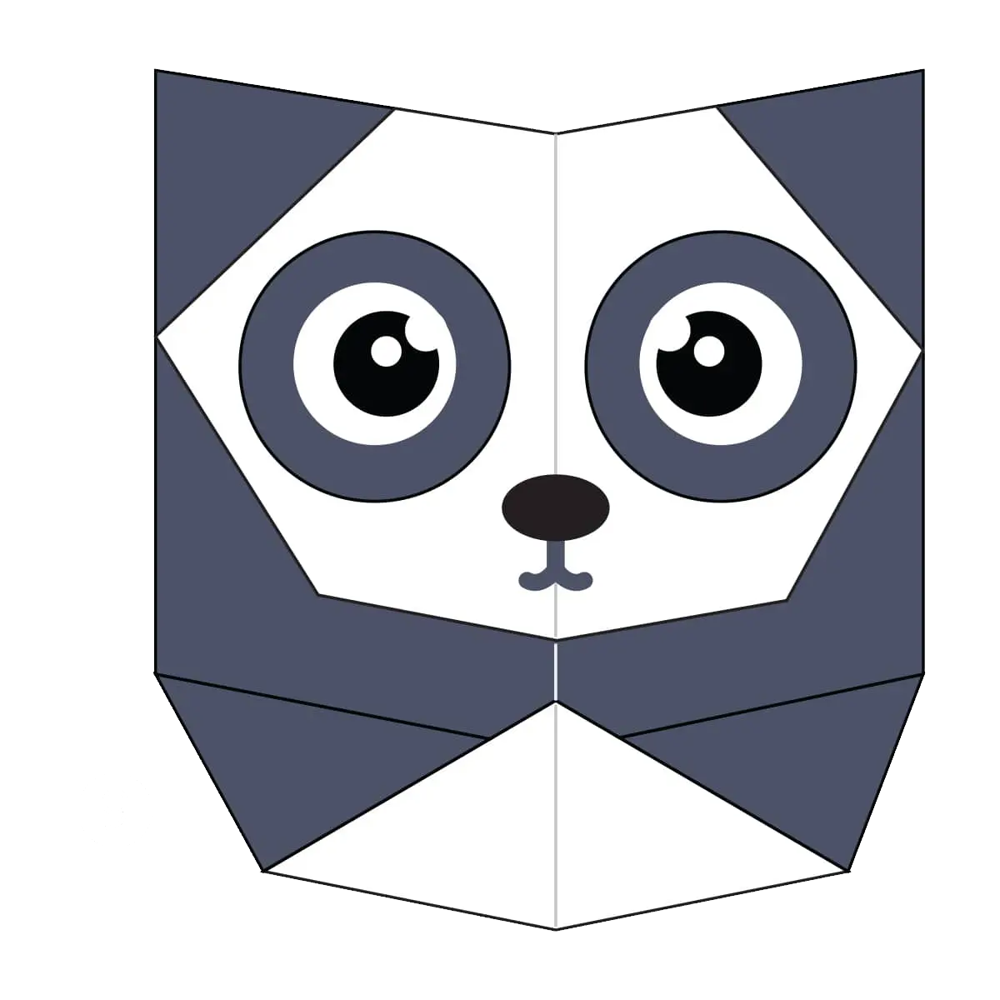
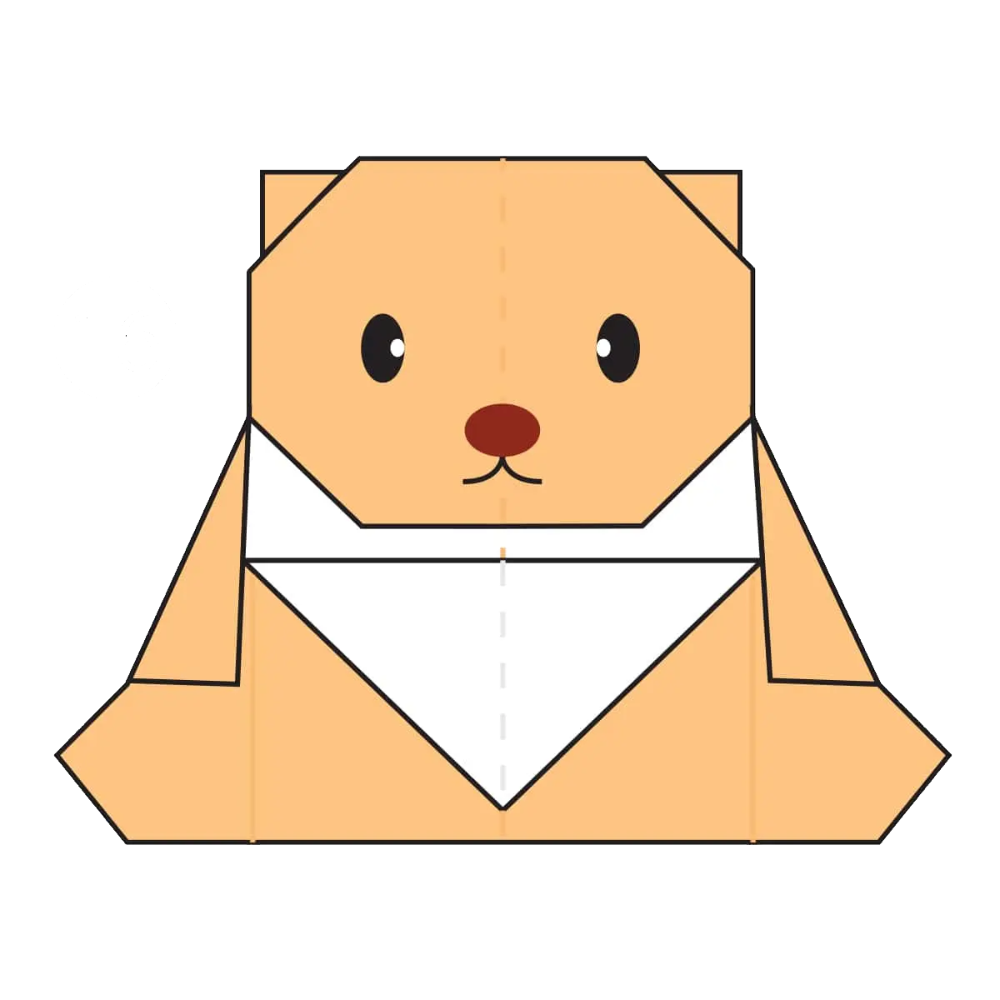

Origami Designs
About Us
Follow Us

Interesting facts about camels
- Camels have three sets of eyelids and two rows of eyelashes to keep sand out of their eyes
- Camels have thick lips which let them forage for thorny plants other animals can't eat
- Don’t make a camel angry – they can spit as a way to distract whatever they think is a threat

Interesting facts about cameleons
- Chameleons are reptiles that are part of iguana suborder
- Changing skin color is an important part of communication among chameleons
- Most chameleons have a prehensive tail that they use to wrap around the tree branches

Interesting facts about pigeons
- Pigeons are incredibly complex and intelligent animals
- Pigeons are renowned for their outstanding navigational abilities
- Pigeons have excellent hearing abilities

Interesting facts about cicadas
- Cicadas can survive a huge fall as babies, or nymphs
- The loud whirring or buzzing sound you hear is an all-male cicada chorus
- Cicadas have three eyes in total

Interesting facts about pandas
- An adult panda can eat up to 12–38 kilos of bamboo per day!
- Pandas are good at climbing trees and can also swim
- Pandas have carnivorous teeth, but they eat bamboo and fruit

Interesting facts about teddy bears
- The world's smallest stitched teddy bear is a mere 0.29 inches tall!
- The Oxford English Dictionary dates the first use of the term teddy bear to 1906
- The first toy stuffed bear was created by German toymaker Margarete Steiff